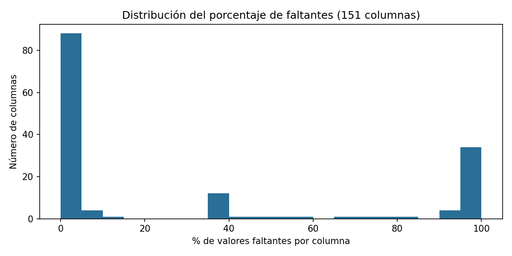
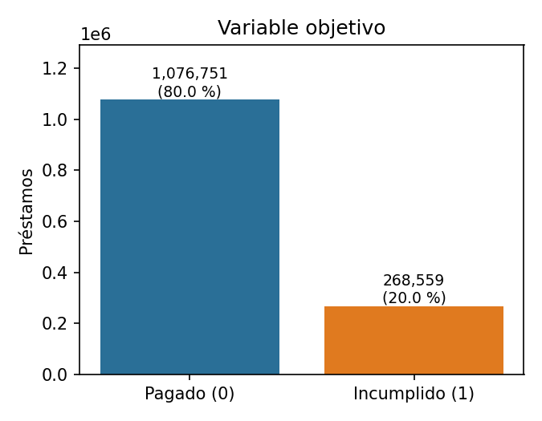
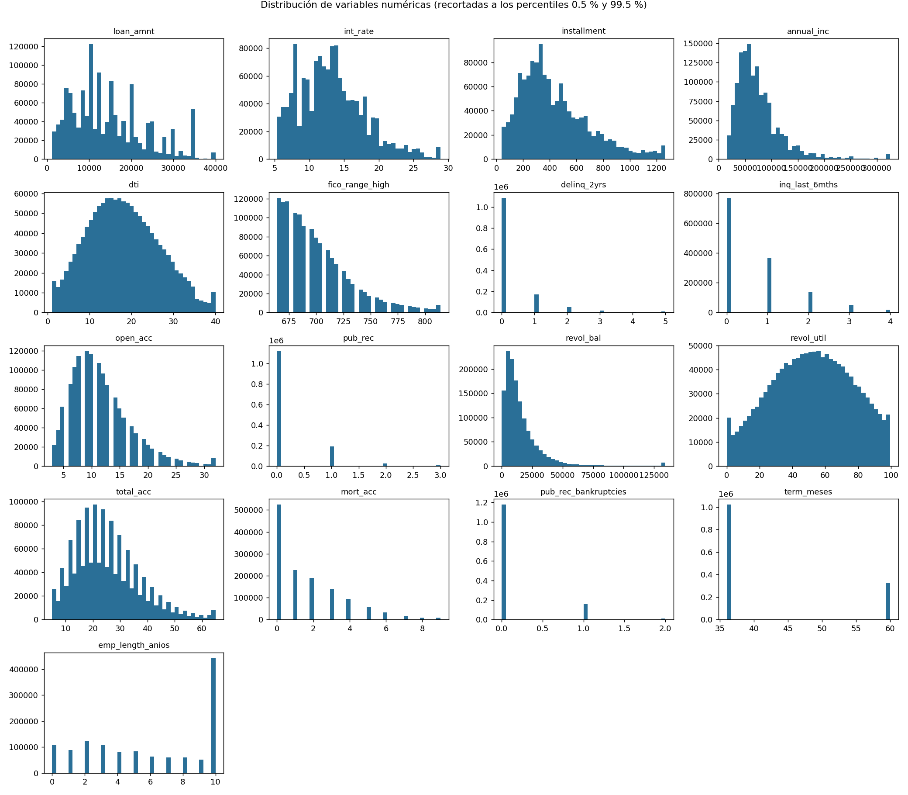
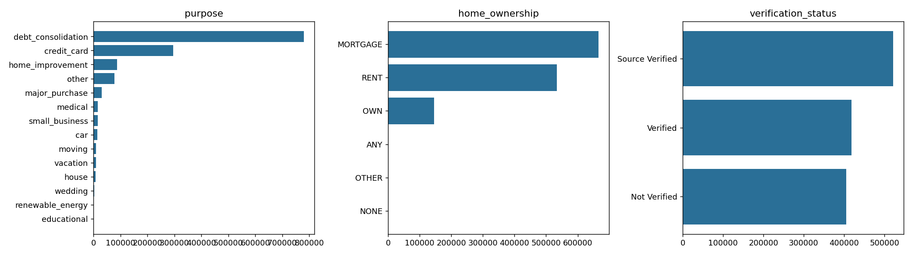
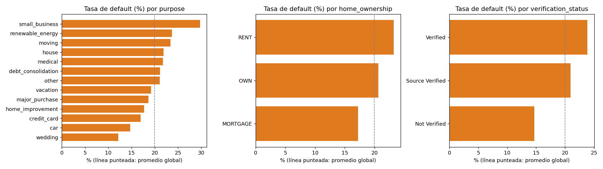
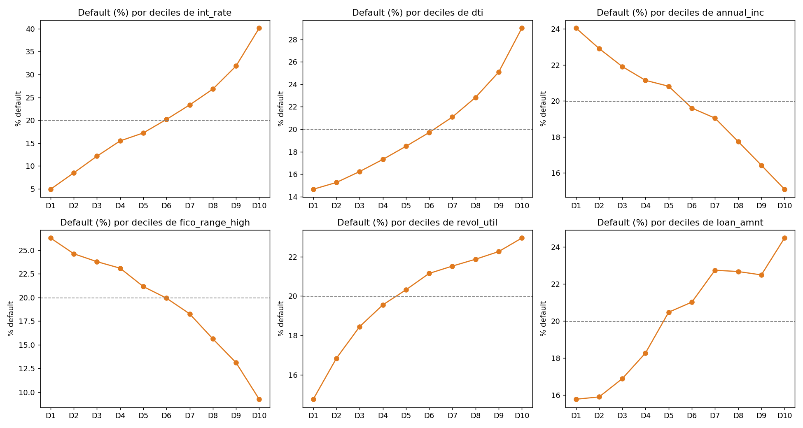
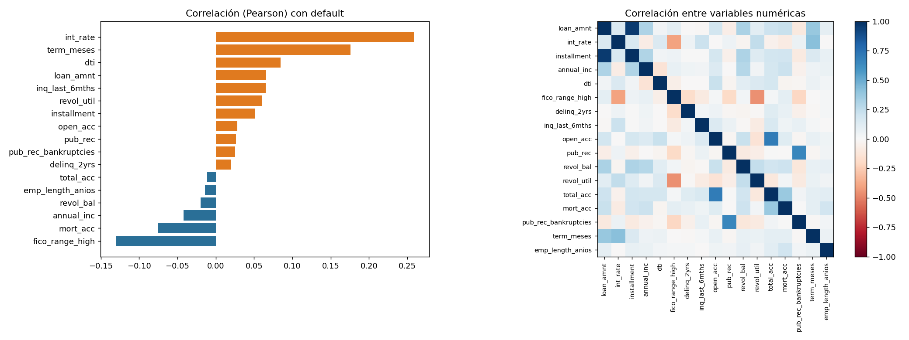
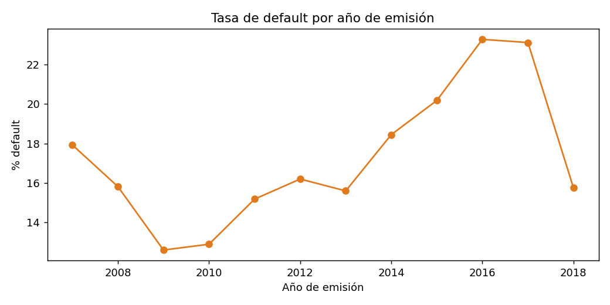

1. Datos y análisis exploratorio#
Población de estudio#
El archivo accepted_2007_to_2018Q4 tiene 2,260,701 filas y 151 columnas. Se conservan solo los préstamos con desenlace final conocido:
Estado |
Préstamos |
|---|---|
Fully Paid ( |
1,076,751 |
Charged Off ( |
268,559 |
Total de estudio |
1,345,310 |
La tasa de incumplimiento es 19.96 %. Se excluyen los préstamos vigentes, en mora o con otros estados, porque su desenlace todavía no se conoce.
Partición común#
Estratificada 80/20 con semilla 42: 1,076,248 filas de entrenamiento y 269,062 de prueba. Se generó una sola vez con scikit-learn y se guardó con el id de cada préstamo. PySpark la une por id, por lo que ambos entornos usan exactamente los mismos conjuntos, lo que es indispensable para las pruebas pareadas.
Variables (91 características tras el preprocesamiento)#
Numéricas (17):
loan_amnt,int_rate,installment,annual_inc,dti,fico_range_high,delinq_2yrs,inq_last_6mths,open_acc,pub_rec,revol_bal,revol_util,total_acc,mort_acc,pub_rec_bankruptcies, másterm_mesesyemp_length_anios(derivadas de texto).Categóricas (4):
purpose,home_ownership,addr_state,verification_status.
Importante
Se usan solo variables conocidas al momento de otorgar el préstamo. No se incluyen variables posteriores (pagos recibidos, saldo pendiente, recuperaciones), que filtrarían el resultado al modelo.
Calidad de datos: valores faltantes#
Entre las variables usadas, los faltantes son pocos: emp_length_anios 5.8 %, mort_acc 3.5 %, revol_util 0.1 %. Se imputan con la mediana de entrenamiento. Las categóricas faltantes se codifican como Desconocido. En el archivo completo hay muchas columnas con faltantes altos (ver figura), que no se usan.

Variable objetivo#

Análisis univariado#


Análisis bivariado frente al incumplimiento#




Nota
La tasa de incumplimiento por año de emisión debe leerse con cuidado: los préstamos recientes tienen menos tiempo para incumplir, o para ser clasificados como cerrados.
Resumen ejecutivo#
Población: 1,345,310 préstamos cerrados; incumplimiento de 20.0 % (aproximadamente 1 de cada 5), por lo que las clases están desbalanceadas.
Tasa de interés: es la variable numérica más correlacionada con el incumplimiento (+0.26). Del decil de menor interés al de mayor, el incumplimiento sube de 4.9 % a 40.2 %.
Plazo: a 36 meses el incumplimiento es 16.0 % y a 60 meses 32.4 % (correlación +0.18).
Puntaje FICO: correlación −0.13; a mejor puntaje, menor incumplimiento.
Faltantes: bajos en las variables usadas (máximo 5.8 %).
Implicación para el modelado: ninguna variable aislada supera una correlación de 0.26; la capacidad predictiva proviene de combinarlas, y con clases desbalanceadas la exactitud engaña. Por eso la métrica principal es el AUC ROC (complementada con AUC-PR).